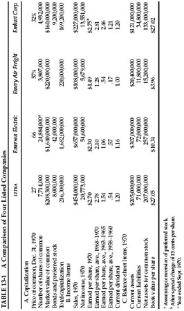
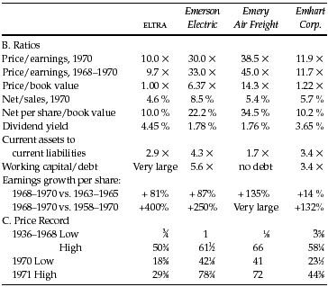

I n this chapter we should like to present a sample of security analysis in operation. We have selected, more or less at random, four companies which are found successively on the New York Stock Exchange list. These are ELTRA Corp. (a merger of Electric Autolite and Mergenthaler Linotype enterprises), Emerson Electric Co. (a manufacturer of electric and electronic products), Emery Air Freight (a domestic forwarder of air freight), and Emhart Corp. (originally a maker of bottling machinery only, but now also in builders’ hardware). * There are some broad resemblances between the three manufacturing firms, but the differences will seem more significant. There should be sufficient variety in the financial and operating data to make the examination of interest.
In Table 13-1 we present a summary of what the four companies were selling for in the market at the end of 1970, and a few figures on their 1970 operations. We then detail certain key ratios, which relate on the one hand to performance and on the other to price. Comment is called for on how various aspects of the performance pattern agree with the relative price pattern. Finally, we shall pass the four companies in review, suggesting some comparisons and relationships and evaluating each in terms of the requirements of a conservative common-stock investor.

TABLE 13-2 A Comparison of Four Listed Companies

The most striking fact about the four companies is that the current price/earnings ratios vary much more widely than their operating performance or financial condition. Two of the enterprises—ELTRA and Emhart—were modestly priced at only 9.7 times and 12 times the average earnings for 1968–1970, as against a similar figure of 15.5 times for the DJIA. The other two—Emerson and Emery—showed very high multiples of 33 and 45 times such earnings. There is bound to be some explanation of a difference such as this, and it is found in the superior growth of the favored companies’ profits in recent years, especially by the freight forwarder. (But the growth figures of the other two firms were not unsatisfactory.)
For more comprehensive treatment let us review briefly the chief elements of performance as they appear from our figures.
1. Profitability. ( a ) All the companies show satisfactory earnings on their book value, but the figures for Emerson and Emery are much higher than for the other two. A high rate of return on invested capital often goes along with a high annual growth rate in earnings per share. * All the companies except Emery showed better earnings on book value in 1969 than in 1961; but the Emery figure was exceptionally large in both years. ( b ) For manufacturing companies, the profit figure per dollar of sales is usually an indication of comparative strength or weakness. We use here the “ratio of operating income to sales,” as given in Standard & Poor’s Listed Stock Reports. Here again the results are satisfactory for all four companies, with an especially impressive showing by Emerson. The changes between 1961 and 1969 vary considerably among the companies.
2. Stability. This we measure by the maximum decline in per-share earnings in any one of the past ten years, as against the average of the three preceding years. No decline translates into 100% stability, and this was registered by the two popular concerns. But the shrinkages of ELTRA and Emhart were quite moderate in the “poor year” 1970, amounting to only 8% each by our measurement, against 7% for the DJIA.
3. Growth. The two low-multiplier companies show quite satisfactory growth rates, in both cases doing better than the Dow Jones group. The ELTRA figures are especially impressive when set against its low price/earnings ratio. The growth is of course more impressive for the high-multiplier pair.
4. Financial Position. The three manufacturing companies are in sound financial condition, having better than the standard ratio of $2 of current assets for $1 of current liabilities. Emery Air Freight has a lower ratio; but it falls in a different category, and with its fine record it would have no problem raising needed cash. All the companies have relatively low long-term debt. “Dilution” note: Emerson Electric had $163 million of market value of low-dividend convertible preferred shares outstanding at the end of 1970. In our analysis we have made allowance for the dilution factor in the usual way by treating the preferred as if converted into common. This decreased recent earnings by about 10 cents per share, or some 4%.
5. Dividends. What really counts is the history of continuance without interruption. The best record here is Emhart’s, which has not suspended a payment since 1902. ELTRA’S record is very good, Emerson’s quite satisfactory, Emery Freight is a newcomer. The variations in payout percentage do not seem especially significant. The current dividend yield is twice as high on the “cheap pair” as on the “dear pair,” corresponding to the price/earnings ratios.
6. Price History. The reader should be impressed by the percentage advance shown in the price of all four of these issues, as measured from the lowest to the highest points during the past 34 years. (In all cases the low price has been adjusted for subsequent stock splits.) Note that for the DJIA the range from low to high was on the order of 11 to 1; for our companies the spread has varied from “only” 17 to 1 for Emhart to no less than 528 to 1 for Emery Air Freight. * These manifold price advances are characteristic of most of our older common-stock issues, and they proclaim the great opportunities of profit that have existed in the stock markets of the past. (But they may indicate also how overdone were the declines in the bear markets before 1950 when the low prices were registered.) Both ELTRA and Emhart sustained price shrinkages of more than 50% in the 1969–70 price break. Emerson and Emery had serious, but less distressing, declines; the former rebounded to a new all-time high before the end of 1970, the latter in early 1971.
General Observations on the Four Companies
Emerson Electric has an enormous total market value, dwarfing the other three companies combined. * It is one of our “good-will giants,” to be commented on later. A financial analyst blessed (or handicapped) with a good memory will think of an analogy between Emerson Electric and Zenith Radio, and that would not be reassuring. For Zenith had a brilliant growth record for many years; it too sold in the market for $1.7 billion (in 1966); but its profits fell from $43 million in 1968 to only half as much in 1970, and in that year’s big selloff its price declined to 22½ against the previous top of 89. High valuations entail high risks.
Emery Air Freight must be the most promising of the four companies in terms of future growth, if the price/earnings ratio of nearly 40 times its highest reported earnings is to be even partially justified. The past growth, of course, has been most impressive. But these figures may not be so significant for the future if we consider that they started quite small, at only $570,000 of net earnings in 1958. It often proves much more difficult to continue to grow at a high rate after volume and profits have already expanded to big totals. The most surprising aspect of Emery’s story is that its earnings and market price continued to grow apace in 1970, which was the worst year in the domestic air-passenger industry. This is a remarkable achievement indeed, but it raises the question whether future profits may not be vulnerable to adverse developments, through increased competition, pressure for new arrangements between forwarders and airlines, etc. An elaborate study might be needed before a sound judgment could be passed on these points, but the conservative investor cannot leave them out of his general reckoning.
Emhart and ELTRA . Emhart has done better in its business than in the stock market over the past 14 years. In 1958 it sold as high as 22 times the current earnings—about the same ratio as for the DJIA. Since then its profits tripled, as against a rise of less than 100% for the Dow, but its closing price in 1970 was only a third above the 1958 high, versus 43% for the Dow. The record of ELTRA is somewhat similar. It appears that neither of these companies possesses glamour, or “sex appeal,” in the present market; but in all the statistical data they show up surprisingly well. Their future prospects? We have no sage remarks to make here, but this is what Standard & Poor’s had to say about the four companies in 1971:
ELTRA —“Long-term Prospects: Certain operations are cyclical, but an established competitive position and diversification are offsetting factors.”
Emerson Electric—“While adequately priced (at 71) on the current outlook, the shares have appeal for the long term…. A continued acquisition policy together with a strong position in industrial fields and an accelerated international program suggests further sales and earnings progress.”
Emery Air Freight—“The shares appear amply priced (at 57) on current prospects, but are well worth holding for the long pull.”
Emhart—“Although restricted this year by lower capital spending in the glass-container industry, earnings should be aided by an improved business environment in 1972. The shares are worth holding (at 34).”
Conclusions: Many financial analysts will find Emerson and Emery more interesting and appealing stocks than the other two—primarily, perhaps, because of their better “market action,” and secondarily because of their faster recent growth in earnings. Under our principles of conservative investment the first is not a valid reason for selection—that is something for the speculators to play around with. The second has validity, but within limits. Can the past growth and the presumably good prospects of Emery Air Freight justify a price more than 60 times its recent earnings? 1 Our answer would be: Maybe for someone who has made an in-depth study of the possibilities of this company and come up with exceptionally firm and optimistic conclusions. But not for the careful investor who wants to be reasonably sure in advance that he is not committing the typical Wall Street error of overenthusiasm for good performance in earnings and in the stock market. * The same cautionary statements seem called for in the case of Emerson Electric, with a special reference to the market’s current valuation of over a billion dollars for the intangible, or earning-power, factor here. We should add that the “electronics industry,” once a fair-haired child of the stock market, has in general fallen on disastrous days. Emerson is an outstanding exception, but it will have to continue to be such an exception for a great many years in the future before the 1970 closing price will have been fully justified by its subsequent performance.
By contrast, both ELTRA at 27 and Emhart at 33 have the earmarks of companies with sufficient value behind their price to constitute reasonably protected investments. Here the investor can, if he wishes, consider himself basically a part owner of these businesses, at a cost corresponding to what the balance sheet shows to be the money invested therein. * The rate of earnings on invested capital has long been satisfactory; the stability of profits also; the past growth rate surprisingly so. The two companies will meet our seven statistical requirements for inclusion in a defensive investor’s portfolio. These will be developed in the next chapter, but we summarize them as follows:
We make no predictions about the future earnings performance of ELTRA or Emhart. In the investor’s diversified list of common stocks there are bound to be some that prove disappointing, and this may be the case for one or both of this pair. But the diversified list itself, based on the above principles of selection, plus whatever other sensible criteria the investor may wish to apply, should perform well enough across the years. At least, long experience tells us so.
A final observation: An experienced security analyst, even if he accepted our general reasoning on these four companies, would have hesitated to recommend that a holder of Emerson or Emery exchange his shares for ELTRA or Emhart at the end of 1970—unless the holder understood clearly the philosophy behind the recommendation. There was no reason to expect that in any short period of time the low-multiplier duo would outperform the high-multipliers. The latter were well thought of in the market and thus had a considerable degree of momentum behind them, which might continue for an indefinite period. The sound basis for preferring ELTRA and Emhart to Emerson and Emery would be the client’s considered conclusion that he preferred value-type investments to glamour-type investments. Thus, to a substantial extent, common-stock investment policy must depend on the attitude of the individual investor. This approach is treated at greater length in our next chapter.